The trust surface between a professional and an AI.
Sean Smith · Founding Product Designer Candidate · Wayline · May 20, 2026
The next 30 minutes.
01
Computis
Crypto tax automation. CPAs. Regulated finance.
02
Symplify
Hospital operations. Clinicians. HIPAA.
03
Wayline
Property management. Property managers. Voice agents.
11:00 PM. April 14th.
47 client wallets. 200,000+ transactions. One deadline that doesn't move.
32% demo-to-customer conversion gap.
Prospects loved the demo. Half of them signed. The CPAs who onboarded ghosted in week two.
Three stakes.
Regulatory
A wrong classification is an IRS audit. The CPA's PTIN is on the return.
Commercial
Every churned CPA was a firm-sized account.
Engineering
The team was rebuilding the model every two months. Precision wasn't moving adoption.
From a percentage to a decision.
The Computis classification surface — confidence as decision-routing.
Before — raw confidence scores
TRANSACTION
CLASSIFICATION
CONF.
BTC → ETH swap
Trade
0.82
USDC inbound
Income
0.67
Wallet transfer
Non-taxable
0.91
Staking reward
Income
0.43
NFT acquisition
Investment
0.71
What did 0.67 mean in dollars at risk? She invented her own threshold. So did everyone else.
After — confidence-banded decisions
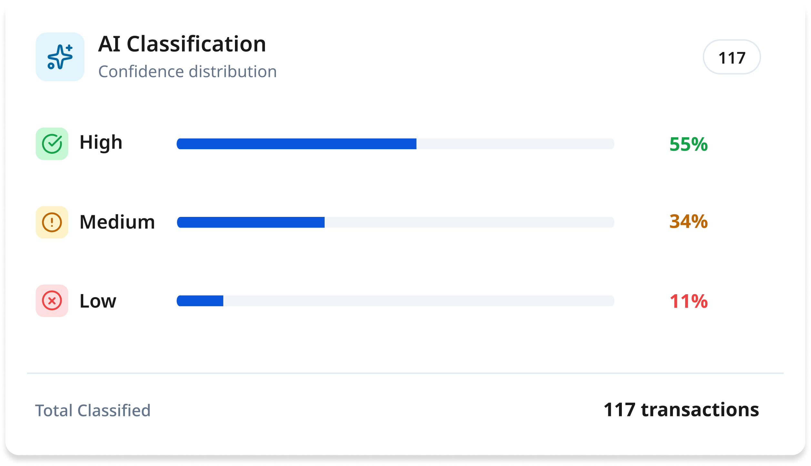
Asset placeholder
computis-classification-insights.png
Source: computis-app/client/components/transactions/classification-insights.tsx — live render at projection scale
High Confidence61 · 55%
Medium Confidence42 · 34%
Low Confidence14 · 11%
Same data. The model still computes the percentage. The surface translates it into three decisions: accept in bulk, review individually, escalate.
Override is the failure mode.
Bulk-edit entrenches distrust. A rule engine turns every override into permanent training signal the CPA can see and audit.
Asset placeholder · motion
computis-rule-engine.mp4
Source: rule-authoring flow capture from the Computis rule-engine module. ~10s loop, no audio, rests on the result state. Static PNG fallback: computis-rule-engine.png
If it recurs, it needs a noun in the URL.
Anomalies were toast notifications. They were invisible by Tuesday. Now they're a routed triage queue.
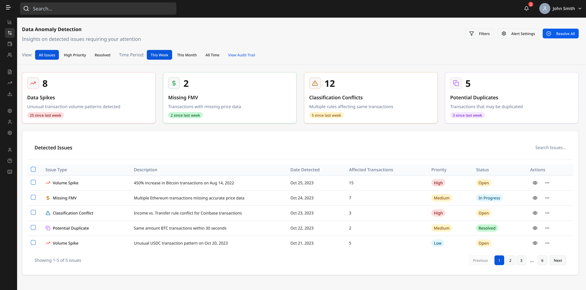
Asset placeholder
computis-anomaly-route.png
Source: computis-app/client/components/data-anomaly-detection/ — table view with priority, status, affected-transactions columns visible
I shipped this. Then I audited myself.
Score: 68 / 100. Dated, public, in the repo.
What I found
- 40% of feature components bypass the design token system.
- Duplicate Button components — one core, one "enhanced."
- Two toast systems running simultaneously.
- Hardcoded color values in nine files instead of one token.
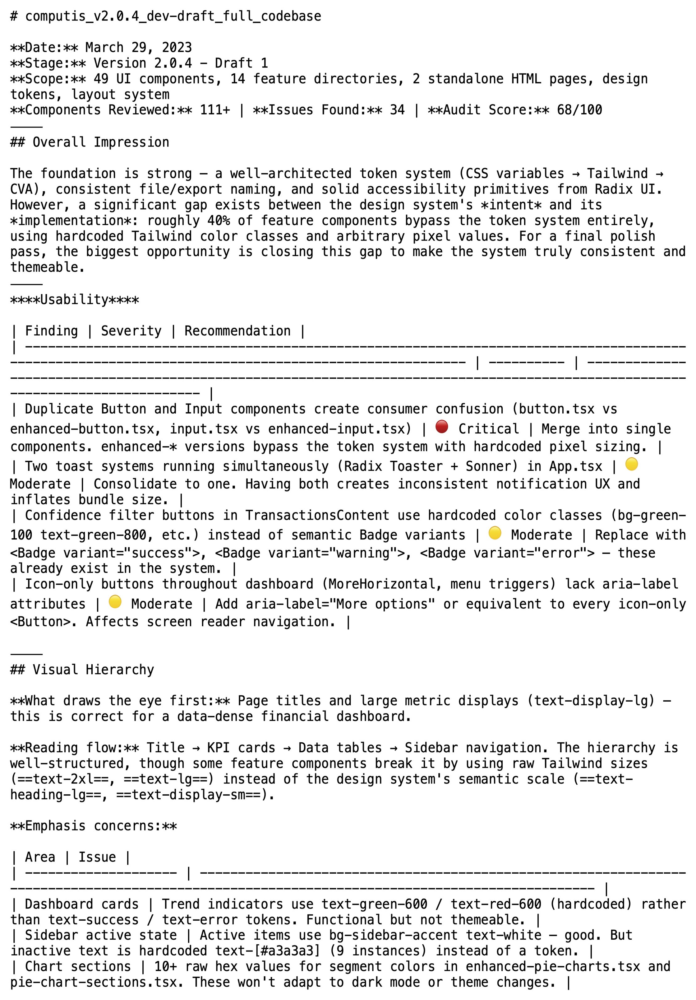
Asset placeholder
computis-design-critique.png
Source: computis-app/DESIGN_CRITIQUE_2026-03-29.md — render the filename in the repo file tree OR the top of the markdown showing the "Audit Score: 68/100" line
Measured, not asserted.
40%
reduction in accounting processing time
45%
reduction in CPA onboarding time
32%
increase in demo-to-customer conversion
85%
reduction in engineering dependency
How we measured.
40% reduction
Accounting processing time
Median time from wallet-ingest to filed-classification, sampled across 6 onboarded firms over a 6-week post-launch window.
45% reduction
CPA onboarding time
Time from credential-issue to first-completed-classification task. Same 6-firm cohort.
How we measured (continued).
32% increase
Demo-to-customer conversion
Sales pipeline data, quarter-over-quarter post-redesign. The conversion gap from slide 4, closed.
85% reduction
Engineering dependency
Design clarification tickets reopened post-handoff, before versus after the v2 component spec. The most attackable of the four — and the one I'm happiest to be pressed on.
I write the React.
Computis component library — mine. 49 components on Radix primitives, design system documented alongside the code.
Figma — source of truth
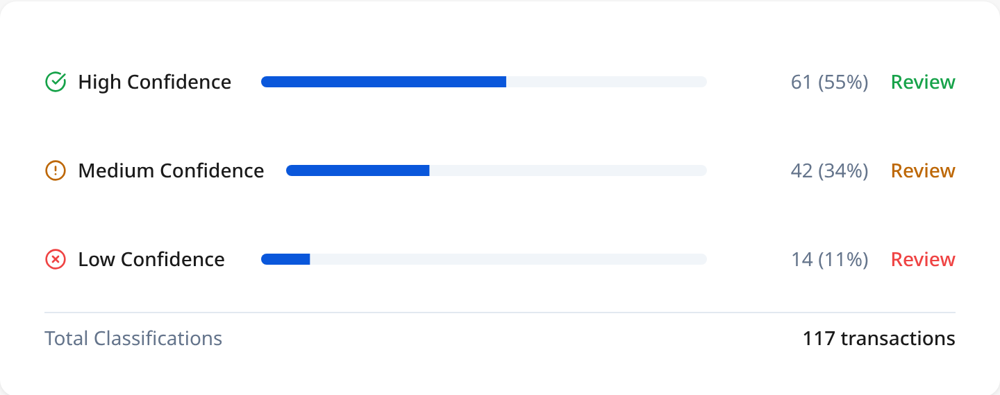
Asset placeholder
figma-classification-insights.png
Source: your Figma file — the classification-insights frame
React — source of record
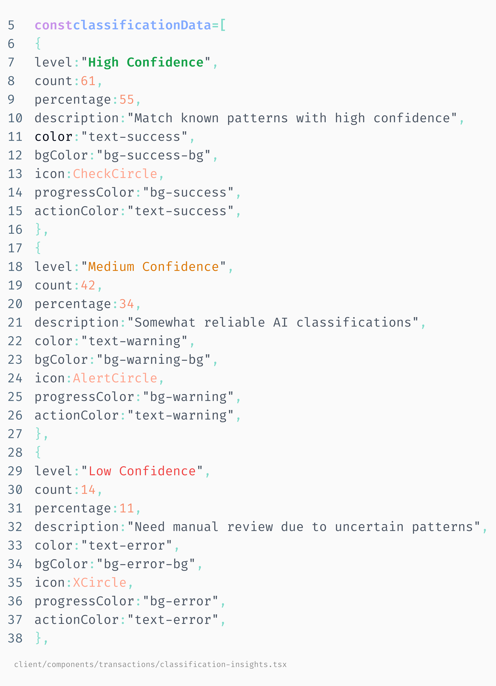
Asset placeholder
code-classification-insights.png
Source: computis-app/client/components/transactions/classification-insights.tsx — syntax-highlighted screenshot, readable at projection scale
Same primitive. New vertical.
The Computis trust surface — and the Symplify one.
Computis · Finance
Asset placeholder
computis-classification-insights.png
Same asset as slide 6 — classification-insights panel
High61
Medium42
Low14
Symplify · Healthcare
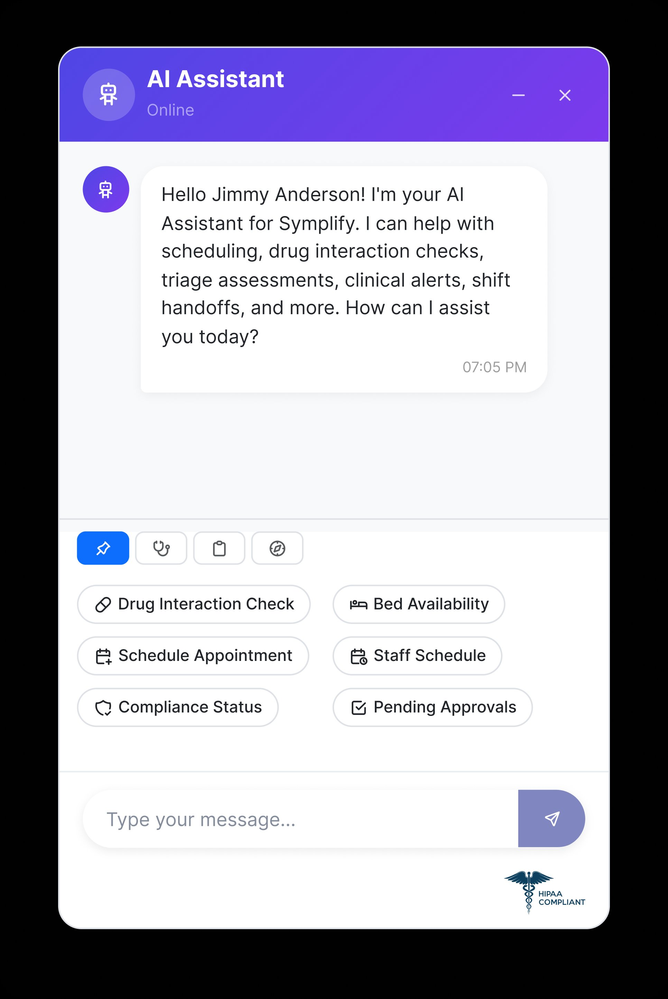
Asset placeholder
symplify-ai-assistant-popup.png
Source: Symplify-1.7.4/src/feature-module/components/ai/ — AIAssistantPopup with ConfidenceIndicator and HIPAABadge visible
06:45.
Fifteen minutes from end-of-shift. Eight patients to hand off. The legacy workflow is a verbal walk-and-talk and a Word doc.
What was real. What was mocked. Why it didn't matter for design.
Real
The design problem.
Confidence-distribution testing. Production-grade component architecture. Role-aware routing. Fourteen deployed surfaces.
Mocked
Model inference.
Simulated latency. Seeded confidence distributions across High / Medium / Low bands. Real-model integration scoped post-handoff.
The same primitive — across fourteen features.
Confidence belongs on the output, not on the feature page.
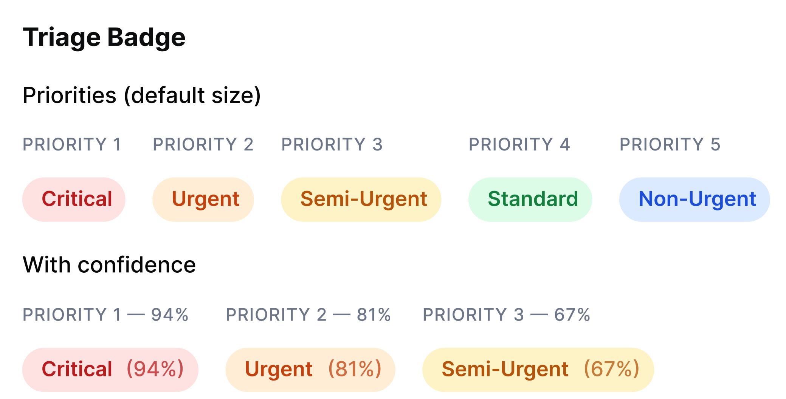
Peripheral
symplify-triage-badge.png
TriagePriorityBadge
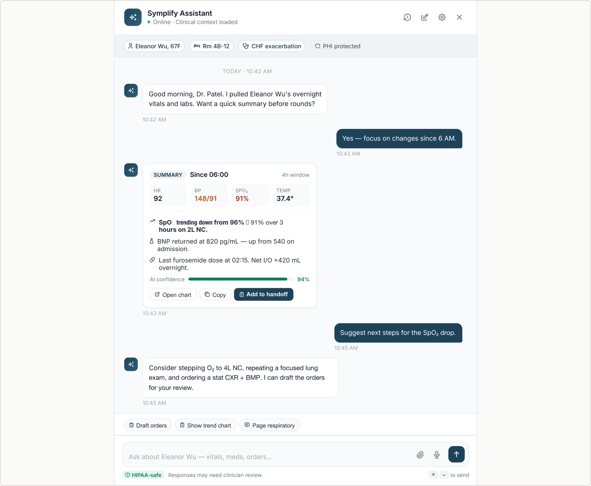
Hero asset
symplify-ai-assistant-popup-large.png
Source: Symplify-1.7.4/src/feature-module/components/ai/ — full AIAssistantPopup at high fidelity, ConfidenceIndicator and HIPAABadge clearly visible
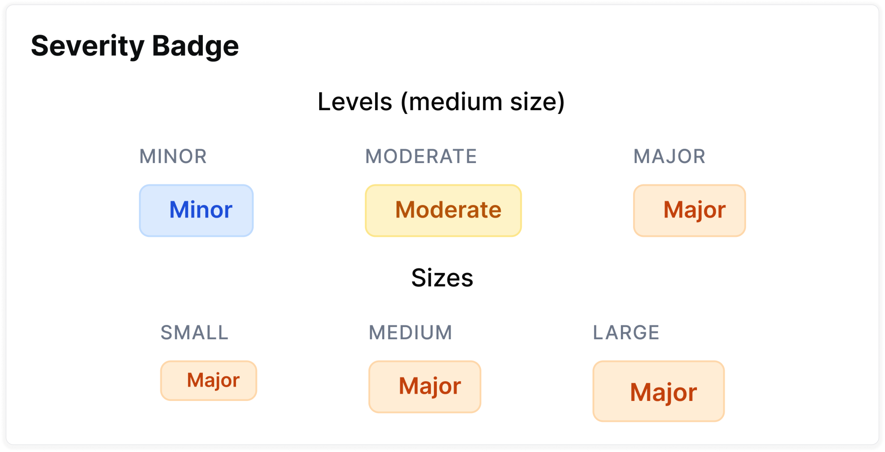
Peripheral
symplify-severity-badge.png
Drug interaction SeverityBadge
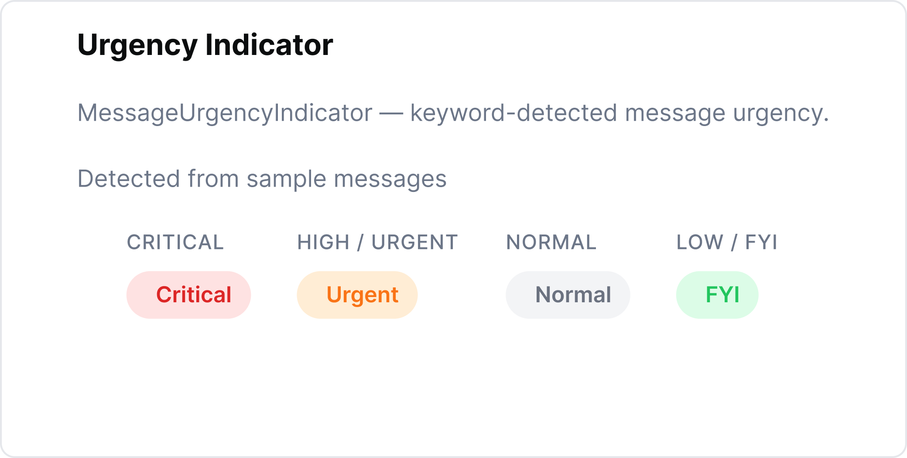
Peripheral
symplify-urgency-indicator.png
MessageUrgencyIndicator
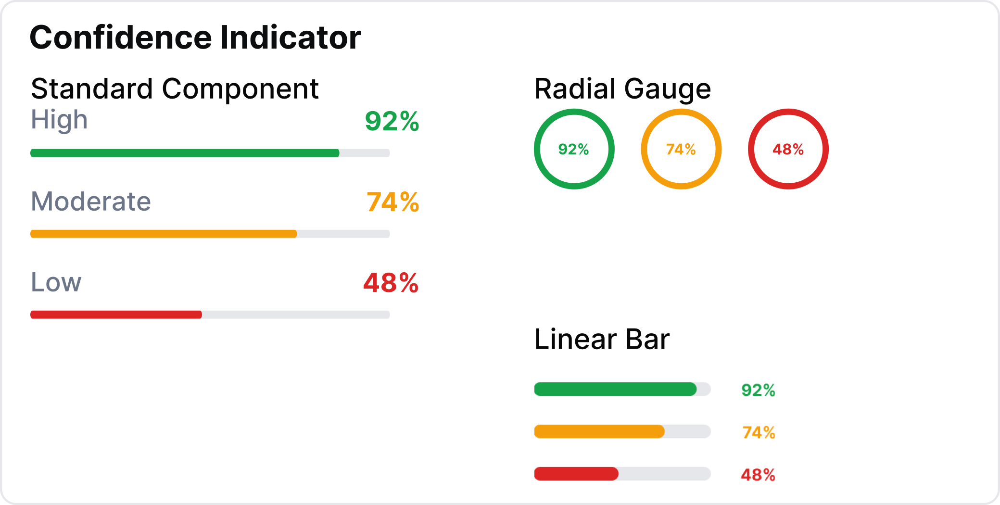
Peripheral
symplify-confidence-indicator.png
ConfidenceIndicator in another surface
Voice is an input modality, not an output format.
Constrained voice puts the burden of structure on the system.
Asset placeholder · motion
symplify-voice-documentation.mp4
Source: Symplify-1.7.4/src/feature-module/components/ai/ — VoiceRecorder + TranscriptionEditor + MedicalTermsHighlighter. Capture the highlighter activating in real-time: voice is spoken → transcript fills → high-risk terms ("chest pain," "shortness of breath," "penicillin") get highlighted as they appear. ~10s loop, no audio, rests on the fully-highlighted state for 2 seconds before restart. Static PNG fallback: symplify-voice-documentation.png
Role isn't permissions. It's calibration.
Admin

Asset
symplify-sidebar-admin.png
src/core/common/ — Sidebar (admin)
Sees numeric confidence values.
Doctor

Asset
symplify-sidebar-doctor.png
src/core/common/ — SidebarTwo (doctor)
Sees three-band confidence.
Patient

Asset
symplify-sidebar-patient.png
src/core/common/ — Sidebarthree (patient)
Sees only clinician-approved output. No AI surface.
I shipped the wrong knob.
One global confidence slider. Should have been per-feature from day one.
What I shipped

Asset / build
symplify-global-slider.png
Build in Figma: a single global confidence slider with a strikethrough rule across it
The fix

Asset / build
symplify-per-feature-thresholds.png
Build in Figma: a per-feature threshold panel — separate confidence sliders for triage, drug interactions, scheduling, handoff, with a "global default" toggle for power users
Caught in clinician testing, two weeks post-launch. Optimized for visual simplicity over operational accuracy.
Three artifacts.
14 shipped AI features.
Confidence threshold slider primitive.
SBAR shift handoff.
Same primitive. Two regulated verticals.
Computis · Finance · CPAs
Asset placeholder
computis-classification-insights.png
Same asset as slides 6, 14
High61
Medium42
Low14
Symplify · Healthcare · Clinicians
Asset placeholder
symplify-ai-assistant-popup.png
Same asset as slides 14, 17 (smaller crop)
One primitive. Three regulated verticals.
Trust surfaces translate model output into human decisions.
Computis · Finance
computis-classification-insights.png
High61
Medium42
Low14
Symplify · Healthcare
symplify-ai-assistant-popup.png
AIAssistantPopup + ConfidenceIndicator + HIPAABadge
Wayline · Property mgmt
Transcript
Tenant
"My sink is leaking..."
HI
Agent
"I can send a tech Friday..."
MD
Callback by Fri 5pm
Confirm
Override
Hand to human
Legibly seamful.
"design and ship AI-native interfaces where humans and agents interact seamlesslylegibly seamful"
Confidence on every output.
Audit at the point of decision.
Override as a first-class affordance.
Seamless says hide the AI. Legibly seamful says show the AI where it matters — because the seams are where the professional's license touches the model.
Wayline — property manager supervises a live agent call
Live transcript
Tenant
"Hi, my sink is leaking in apartment 3B."
HI
Agent
"I'm sorry to hear that. I'll send a technician Friday afternoon."
MD
Tenant
"Also my lease renewal — and rent's due tomorrow."
LO
Agent
"Let me note both. I'll send forms via SMS."
MD
Commitments
Callback by Friday 5pm
Confirm
Override
Send maintenance form via SMS
Confirm
Override
why this classification? →
Hand to human now
transcript
confidence per output
commitments as objects
audit at the point of decision
override as first-class
First 90 days.
30 days.
Ship a baseline supervision surface for one intent class — lease inquiries — behind a feature flag, in front of one customer. Measurement infrastructure ships alongside.
60 days.
Extend the primitive to maintenance and payment disputes. Validate confidence calibration across intent classes.
90 days.
Versioned component library. First round of property-manager-co-authored iteration — half-days sitting with two PMs on real calls.
I design the surface where a professional supervises an AI.
I've done it twice — in finance and in healthcare.
Wayline is property management.
The ask: a two-day work trial.
Bring me a real Wayline problem.
Let me show you the rhythm.